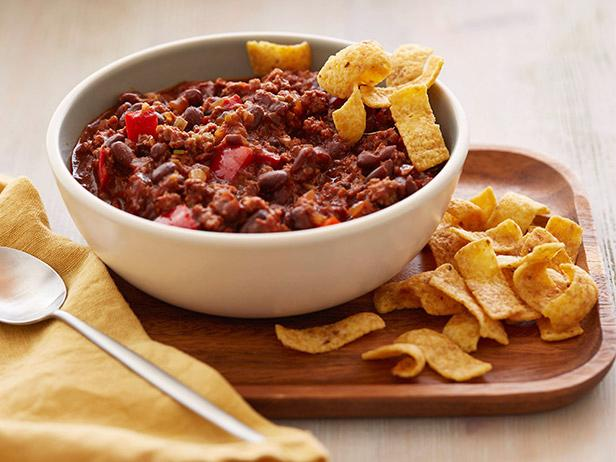

Spicy Turkey Chili

This is a healthy alternative to regular chili, with the same flavor but half the calories!
Turkey Chili has become a staple in our family and it can be in yours too! The Turkey is the perfect meat to mix the spicyness of green chile's with the savoryness of kidney beans!
Ingredients
- 2 (5 ounce) cans turkey meat, drained
- 2 (14.5 ounce) cans Italian-style stewed tomatoes
- 2 (1.25 ounce) packages chili seasoning mix
- 1 (4 ounce) can green chile peppers
- 1 (8 ounce) can tomato sauce
- 1 onion, diced
- 1 cup water
Directions
- Saute Onions in large pan for 20min
- In a slow cooker, combine turkey, beans, tomatoes, chili seasoning, chile peppers, tomato sauce, onion and water
- Cook on low 3 to 4 hours. Serve hot.